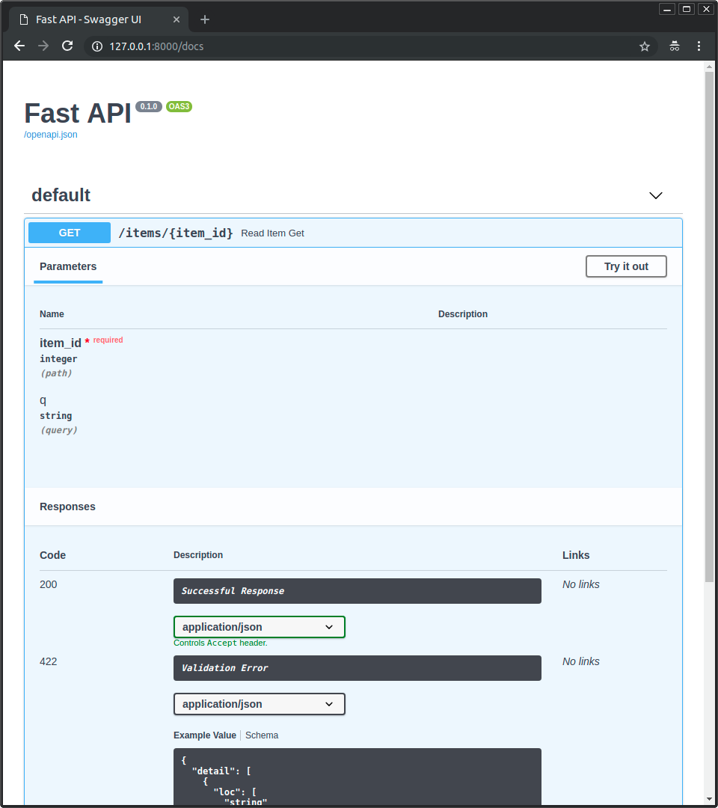

Swagger UI とドキュメント公開チュートリアル
Swagger UI は、OpenAPI仕様（旧Swagger仕様）に基づくAPIドキュメントの可視化ツールで、API仕様ドキュメントを対話型のAPIドキュメントインターフェースに変換できます。
Swagger UIを通じて、開発者とユーザーは以下を行うことができます：
- APIの詳細情報を表示する
- 画面上で直接APIリクエストをテストする
- リクエストとレスポンスの例を表示する
- さまざまなAPIエンドポイントの機能とパラメータを理解する
Swagger UI の利点
- 可視化：明確で直感的なAPIドキュメントインターフェースを提供
- インタラクティブ性：追加ツールなしでAPIのオンラインテストをサポート
- リアルタイム更新：コード変更後、ドキュメントが自動的に更新される
- 標準化：OpenAPI仕様に基づき、一貫性を保つ
- 多言語サポート：さまざまなプログラミング言語とフレームワークに対応
Swagger UI の統合
1. Spring Bootプロジェクトへの統合
依存関係の追加
在 pom.xml以下の依存関係を追加します：
例
<dependency>
<groupId>io.springfox</groupId>
<artifactId>springfox-swagger2</artifactId>
<version>3.0.0</version>
</dependency>
<!-- Springfox Swagger UI -->
<dependency>
<groupId>io.springfox</groupId>
<artifactId>springfox-swagger-ui</artifactId>
<version>3.0.0</version>
</dependency>
またはSpringDoc OpenAPIを使用する場合：
例
<groupId>org.springdoc</groupId>
<artifactId>springdoc-openapi-ui</artifactId>
<version>1.6.14</version>
</dependency>
Swaggerの設定
例
import org.springframework.context.annotation.Configuration;
import springfox.documentation.builders.ApiInfoBuilder;
import springfox.documentation.builders.PathSelectors;
import springfox.documentation.builders.RequestHandlerSelectors;
import springfox.documentation.service.ApiInfo;
import springfox.documentation.service.Contact;
import springfox.documentation.spi.DocumentationType;
import springfox.documentation.spring.web.plugins.Docket;
import springfox.documentation.swagger2.annotations.EnableSwagger2;
@Configuration
@EnableSwagger2
public class SwaggerConfig {
@Bean
public Docket api() {
return new Docket(DocumentationType.SWAGGER_2)
.select()
.apis(RequestHandlerSelectors.basePackage("com.example.controller"))
.paths(PathSelectors.any())
.build()
.apiInfo(apiInfo());
}
private ApiInfo apiInfo() {
return new ApiInfoBuilder()
.title("APIドキュメント")
.description("APIの詳細説明")
.version("1.0.0")
.contact(new Contact("開発チーム", "https://example.com", "team@example.com"))
.build();
}
}
SpringDoc OpenAPIの場合：
例
import org.springframework.context.annotation.Bean;
import org.springframework.context.annotation.Configuration;
import io.swagger.v3.oas.models.OpenAPI;
import io.swagger.v3.oas.models.info.Info;
import io.swagger.v3.oas.models.info.Contact;
@Configuration
public class SwaggerConfig {
@Bean
public OpenAPI customOpenAPI() {
return new OpenAPI()
.info(new Info()
.title("APIドキュメント")
.version("1.0.0")
.description("APIの詳細説明")
.contact(new Contact()
.name("開発チーム")
.email("team@example.com")
.url("https://example.com")));
}
@Bean
public GroupedOpenApi publicApi() {
return GroupedOpenApi.builder()
.group("public-apis")
.pathsToMatch("/api/**")
.build();
}
}
2. Node.js Expressプロジェクトへの統合
依存関係のインストール
npm install swagger-jsdoc swagger-ui-express --save
Swaggerの設定
例
const swaggerJsDoc = require('swagger-jsdoc');
const swaggerUi = require('swagger-ui-express');
const app = express();
// Swagger設定
const swaggerOptions = {
definition: {
openapi: '3.0.0',
info: {
title: 'APIドキュメント',
version: '1.0.0',
description: 'APIの詳細説明',
contact: {
name: '開発チーム',
email: 'team@example.com',
url: 'https://example.com'
}
},
servers: [
{
url: 'http://localhost:3000',
description: '開発サーバー'
}
]
},
apis: ['./routes/*.js'] // APIルートファイルのパス
};
const swaggerDocs = swaggerJsDoc(swaggerOptions);
app.use('/api-docs', swaggerUi.serve, swaggerUi.setup(swaggerDocs));
// ... その他のルートとミドルウェア
app.listen(3000, () => {
console.log('サーバーは http://localhost:3000 で実行中');
console.log('APIドキュメントは http://localhost:3000/api-docs でアクセス可能');
});
3. Python FastAPIプロジェクトでの使用
FastAPIはデフォルトでSwagger UIを統合しています：
例
app = FastAPI(
title="APIドキュメント",
description="APIの詳細説明",
version="1.0.0",
contact={
"name": "開発チーム",
"email": "team@example.com",
"url": "https://example.com",
},
)
@app.get("/")
async def root():
return {"message": "Hello World"}
Swagger UIはデフォルトで/docsパスからアクセスでき、http://localhost:8000/docs にアクセスするとドキュメントを確認できます。

詳細は以下を参照してください：FastAPI 対話型APIドキュメント
APIドキュメントの作成
1. Spring BootプロジェクトのAPIドキュメントアノテーション
例
import org.springframework.web.bind.annotation.*;
@RestController
@RequestMapping("/api/users")
@Api(tags = "ユーザー管理")
public class UserController {
@ApiOperation(value = "ユーザーリストの取得", notes = "すべてのユーザー情報をページングで取得")
@ApiResponses({
@ApiResponse(code = 200, message = "成功"),
@ApiResponse(code = 400, message = "リクエストパラメータエラー"),
@ApiResponse(code = 500, message = "サーバー内部エラー")
})
@GetMapping("/")
public Page<User> getUsers(
@ApiParam(value = "ページ番号", required = true) @RequestParam int page,
@ApiParam(value = "1ページあたりのレコード数", required = true) @RequestParam int size) {
// ビジネスロジック
return userService.getUsers(page, size);
}
@ApiOperation(value = "単一ユーザーの取得", notes = "IDに基づいてユーザー情報を取得")
@GetMapping("/{id}")
public User getUser(
@ApiParam(value = "ユーザーID", required = true) @PathVariable Long id) {
// ビジネスロジック
return userService.getUser(id);
}
@ApiOperation(value = "ユーザーの作成", notes = "新しいユーザーの作成")
@PostMapping("/")
public User createUser(
@ApiParam(value = "ユーザー情報", required = true) @RequestBody UserDTO userDTO) {
// ビジネスロジック
return userService.createUser(userDTO);
}
}
SpringDoc OpenAPIの場合：
例
import io.swagger.v3.oas.annotations.media.*;
import io.swagger.v3.oas.annotations.responses.*;
import io.swagger.v3.oas.annotations.tags.Tag;
import org.springframework.web.bind.annotation.*;
@RestController
@RequestMapping("/api/users")
@Tag(name = "ユーザー管理", description = "ユーザー関連API")
public class UserController {
@Operation(
summary = "ユーザーリストの取得",
description = "すべてのユーザー情報をページングで取得"
)
@ApiResponses(value = {
@ApiResponse(responseCode = "200", description = "成功"),
@ApiResponse(responseCode = "400", description = "リクエストパラメータエラー"),
@ApiResponse(responseCode = "500", description = "サーバー内部エラー")
})
@GetMapping("/")
public Page<User> getUsers(
@Parameter(description = "ページ番号", required = true) @RequestParam int page,
@Parameter(description = "1ページあたりのレコード数", required = true) @RequestParam int size) {
// ビジネスロジック
return userService.getUsers(page, size);
}
}
2. Node.js ExpressプロジェクトのAPIドキュメントコメント
例
* @swagger
* /api/users:
* get:
* summary: ユーザーリストの取得
* description: すべてのユーザー情報をページングで取得
* tags: [ユーザー管理]
* parameters:
* - in: query
* name: page
* schema:
* type: integer
* required: true
* description: ページ番号
* - in: query
* name: size
* schema:
* type: integer
* required: true
* description: 1ページあたりのレコード数
* responses:
* 200:
* description: 成功
* content:
* application/json:
* schema:
* type: object
* properties:
* data:
* type: array
* items:
* $ref: '#/components/schemas/User'
* total:
* type: integer
* 400:
* description: リクエストパラメータエラー
* 500:
* description: サーバー内部エラー
*/
router.get('/users', (req, res) => {
// ビジネスロジック
});
/**
* @swagger
* components:
* schemas:
* User:
* type: object
* required:
* - name
* properties:
* id:
* type: integer
* description: ユーザーID
* name:
* type: string
* description: ユーザー名
* email:
* type: string
* format: email
* description: ユーザーメールアドレス
*/
3. Python FastAPIプロジェクトのAPIドキュメント
例
from pydantic import BaseModel
from typing import List, Optional
app = FastAPI(title="ユーザー管理API")
class User(BaseModel):
id: int
name: str
email: str
class Config:
schema_extra = {
"example": {
"id": 1,
"name": "張三",
"email": "zhangsan@example.com"
}
}
@app.get(
"/api/users/",
summary="ユーザーリストの取得",
description="すべてのユーザー情報をページングで取得",
response_model=List[User],
tags=["ユーザー管理"]
)
async def get_users(
page: int = Query(..., description="ページ番号", ge=1),
size: int = Query(..., description="1ページあたりのレコード数", ge=1, le=100)
):
# ビジネスロジック
return [
{"id": 1, "name": "張三", "email": "zhangsan@example.com"},
{"id": 2, "name": "李四", "email": "lisi@example.com"}
]
@app.get(
"/api/users/{user_id}",
summary="単一ユーザーの取得",
description="IDに基づいてユーザー情報を取得",
response_model=User,
tags=["ユーザー管理"]
)
async def get_user(
user_id: int = Path(..., description="ユーザーID", ge=1)
):
# ビジネスロジック
return {"id": user_id, "name": "張三", "email": "zhangsan@example.com"}
Swagger UI のカスタマイズ
1. Spring Bootのカスタム設定
例
public Docket api() {
return new Docket(DocumentationType.SWAGGER_2)
.select()
.apis(RequestHandlerSelectors.basePackage("com.example.controller"))
.paths(PathSelectors.regex("/api/.*"))
.build()
.apiInfo(apiInfo())
.useDefaultResponseMessages(false) // デフォルトのレスポンスメッセージを無効化
.globalResponseMessage(RequestMethod.GET, globalResponses()) // グローバルレスポンスメッセージをカスタマイズ
.securitySchemes(Arrays.asList(apiKey())) // セキュリティ認証を設定
.securityContexts(Arrays.asList(securityContext())); // セキュリティコンテキストを設定
}
private List<ResponseMessage> globalResponses() {
return Arrays.asList(
new ResponseMessageBuilder().code(200).message("成功").build(),
new ResponseMessageBuilder().code(400).message("リクエストパラメータエラー").build(),
new ResponseMessageBuilder().code(401).message("未認可").build(),
new ResponseMessageBuilder().code(403).message("アクセス禁止").build(),
new ResponseMessageBuilder().code(500).message("サーバー内部エラー").build()
);
}
private ApiKey apiKey() {
return new ApiKey("JWT", "Authorization", "header");
}
private SecurityContext securityContext() {
return SecurityContext.builder()
.securityReferences(defaultAuth())
.forPaths(PathSelectors.regex("/api/.*"))
.build();
}
private List<SecurityReference> defaultAuth() {
AuthorizationScope authorizationScope = new AuthorizationScope("global", "accessEverything");
AuthorizationScope[] authorizationScopes = new AuthorizationScope[1];
authorizationScopes[0] = authorizationScope;
return Arrays.asList(new SecurityReference("JWT", authorizationScopes));
}
2. Expressのカスタム設定
例
customCss: '.swagger-ui .topbar { display: none }', // CSSをカスタマイズ
customSiteTitle: "APIドキュメントセンター", // ページタイトル
customfavIcon: "/favicon.png", // アイコンをカスタマイズ
swaggerOptions: {
persistAuthorization: true, // 認可情報を保持
docExpansion: 'none', // デフォルトで全APIを折りたたむ
tagsSorter: 'alpha', // タグをアルファベット順にソート
operationsSorter: 'alpha', // オペレーションをアルファベット順にソート
defaultModelsExpandDepth: -1, // モデルを非表示
filter: true, // フィルタリングを有効化
}
};
app.use('/api-docs', swaggerUi.serve, swaggerUi.setup(swaggerDocs, options));
3. FastAPIのカスタム設定
例
from fastapi.openapi.docs import get_swagger_ui_html
from fastapi.staticfiles import StaticFiles
app = FastAPI(
title="APIインターフェースドキュメント",
docs_url=None, # デフォルトのSwagger UIを無効化
)
app.mount("/static", StaticFiles(directory="static"), name="static")
@app.get("/docs", include_in_schema=False)
async def custom_swagger_ui_html():
return get_swagger_ui_html(
openapi_url=app.openapi_url,
title=app.title + " - APIドキュメント",
oauth2_redirect_url=app.swagger_ui_oauth2_redirect_url,
swagger_js_url="/static/swagger-ui-bundle.js",
swagger_css_url="/static/swagger-ui.css",
swagger_favicon_url="/static/favicon.png",
swagger_ui_parameters={
"docExpansion": "none",
"defaultModelsExpandDepth": -1,
"filter": True,
}
)
ドキュメント公開
1. 内部公開
チーム内での利用には、アプリケーション内のSwagger UIから直接アクセスできます:
- Spring Boot:
http://your-app-host:port/swagger-ui/index.html - Express:
http://your-app-host:port/api-docs - FastAPI:
http://your-app-host:port/docs
2. 静的ドキュメント生成
Swagger Codegenを使用して静的ドキュメントを生成
# 安装 Swagger Codegen CLI wget https://repo1.maven.org/maven2/io/swagger/codegen/v3/swagger-codegen-cli/3.0.35/swagger-codegen-cli-3.0.35.jar -O swagger-codegen-cli.jar # 生成静态 HTML 文档 java -jar swagger-codegen-cli.jar generate -i http://your-app-host:port/v3/api-docs -l html2 -o ./api-docs
Redocを使用して静的ドキュメントを生成
# 安装 redoc-cli npm install -g redoc-cli # 生成静态 HTML 文档 redoc-cli bundle http://your-app-host:port/v3/api-docs -o ./api-docs/index.html
3. CI/CDパイプラインへの統合
CI/CDパイプラインにドキュメントの生成と公開のステップを追加します:
Jenkinsパイプラインの例
例
agent any
stages {
// ... その他のビルドおよびテスト段階
stage('Generate API Documentation') {
steps {
sh 'java -jar swagger-codegen-cli.jar generate -i http://your-app-host:port/v3/api-docs -l html2 -o ./api-docs'
}
}
stage('Publish Documentation') {
steps {
// Nginx静的ファイルサーバーに公開
sh 'rsync -avz --delete ./api-docs/ user@doc-server:/var/www/api-docs/'
// またはオブジェクトストレージ（AWS S3など）に公開
sh 'aws s3 sync ./api-docs/ s3://your-bucket/api-docs/ --delete'
}
}
}
}
GitHub Actions ワークフローの例
例
on:
push:
branches: [ main ]
jobs:
build-and-deploy:
runs-on: ubuntu-latest
steps:
- uses: actions/checkout@v2
- name: Set up JDK
uses: actions/setup-java@v2
with:
distribution: 'adopt'
java-version: '11'
- name: Build application
run: ./mvnw clean package
- name: Start application
run: |
java -jar target/your-app.jar &
sleep 30# アプリケーションの起動を待つ
- name: Generate API Documentation
run: |
wget -q https://repo1.maven.org/maven2/io/swagger/codegen/v3/swagger-codegen-cli/3.0.35/swagger-codegen-cli-3.0.35.jar -O swagger-codegen-cli.jar
java -jar swagger-codegen-cli.jar generate -i http://localhost:8080/v3/api-docs -l html2 -o ./api-docs
- name: Deploy to GitHub Pages
uses: JamesIves/github-pages-deploy-action@4.1.5
with:
branch: gh-pages
folder: api-docs
4. APIドキュメント管理プラットフォームの利用
自前でデプロイするほかに、専門のAPIドキュメント管理プラットフォームを利用することもできます:
- Swagger Hub: API設計とドキュメントホスティングサービスを提供
- Postman: APIをテストするだけでなく、APIドキュメントも公開できます
- ReadMe.io: 包括的なAPIドキュメント管理とデベロッパーポータルを提供
- Stoplight: API設計、ドキュメント、ガバナンスツールを提供
5. DockerでSwagger UIをデプロイする
例
# 環境変数を設定
ENV SWAGGER_JSON=/swagger/openapi.json
ENV BASE_URL=/api-docs
# OpenAPI仕様ファイルをコピー
COPY openapi.json /swagger/
# ポートを公開
EXPOSE 8080
# Swagger UIを起動
CMD ["sh", "/usr/share/nginx/docker-run.sh"]
ビルドと実行:
docker build -t my-swagger-ui . docker run -p 8080:8080 my-swagger-ui
アクセス: http://localhost:8080/api-docs
ベストプラクティス
1. ドキュメント規約
- 簡潔かつ明確に保つ: 説明は簡潔で的を絞ったものにする
- グループ管理: タグを使用してAPIを論理的にグループ化する
- サンプルの提供: リクエストとレスポンスの例を提供する
- エラー処理の標準化: エラーレスポンスの形式とステータスコードを統一する
- バージョン管理: ドキュメントにAPIバージョン情報を明記する
2. セキュリティ設定
- 機密情報の取り扱い: ドキュメントに機密情報を公開しない
- 本番環境の設定: 本番環境ではドキュメントアクセスを選択的に無効化または制限できる
- 認証メカニズム: ドキュメントアクセスの認証を設定する
例
@Bean
public Docket api() {
return new Docket(DocumentationType.SWAGGER_2)
.enable(!environment.acceptsProfiles(Profiles.of("prod")))
// ... その他の設定
}
3. 自動テスト
ドキュメントとテストを組み合わせ、ドキュメントの内容が実際のAPIの動作と一致していることを確認します:
例
@Test
public void validateSwaggerDocumentation() {
// Swagger JSONを取得する
String swaggerJson = given()
.when()
.get("/v3/api-docs")
.then()
.statusCode(200)
.extract().asString();
// Swaggerドキュメントを検証する
OpenAPI openAPI = new OpenAPIParser().readContents(swaggerJson, null, null).getOpenAPI();
assertNotNull(openAPI);
// 特定のエンドポイントがドキュメント内にあるか検証する
assertNotNull(openAPI.getPaths().get("/api/users"));
}
よくある問題の解決
1. Swagger UIが表示されない、または読み込みエラー
- 依存関係のバージョンを確認: 依存関係のバージョンが互換性があることを確認する
- 設定クラスを確認: 設定クラスが正しく登録されていることを確認する
- パスマッピングを確認: パスマッピングが正しいことを確認する
- クロスオリジン設定を確認: クロスオリジンアクセスの場合、CORS設定が正しいことを確認する
2. API情報が不完全
- アノテーションを確認: 必要なアノテーションがすべて追加されていることを確認する
- パッケージスキャンパスを確認: スキャンパスにすべてのコントローラーが含まれていることを確認する
- モデルクラスを確認: モデルクラスに正しい説明があることを確認する
3. 本番環境のセキュリティ問題
本番環境でドキュメントを無効化または保護する設定:
# application-prod.properties springdoc.swagger-ui.enabled=false springdoc.api-docs.enabled=false
または基本認証で保護する:
例
@Profile("prod")
public class SwaggerSecurityConfig extends WebSecurityConfigurerAdapter {
@Override
protected void configure(HttpSecurity http) throws Exception {
http.requestMatchers()
.antMatchers("/swagger-ui/**", "/v3/api-docs/**")
.and()
.authorizeRequests()
.anyRequest().hasRole("ADMIN")
.and()
.httpBasic();
}
}
まとめ
Swagger UIは強力なAPIドキュメントツールであり、正しく設定・使用することで、APIの可用性と開発効率を大幅に向上させることができます。本チュートリアルでは、Swagger UIの基本概念、統合方法、ドキュメント作成、カスタム設定、ドキュメント公開、およびベストプラクティスについて紹介しました。APIドキュメント作成の参考になれば幸いです。
以下の重要なポイントを覚えておいてください:
- プロジェクトの技術スタックに適したSwagger統合方式を選択する
- APIドキュメントのアノテーションやコメントを丁寧に設計・作成する
- 必要に応じてSwagger UIのインターフェースをカスタマイズする
- 適切なドキュメント公開方法を選択する
- ベストプラクティスに従い、ドキュメントの正確性と安全性を確保する
Swagger UIを適切に活用することで、APIに専門的でインタラクティブなドキュメントを提供し、APIをより理解しやすく、使いやすくすることができます。
その他の拡張
クリックしてノートを共有
<p style="font-size:14px;">ノートはこの記事の内容の拡張である必要があります！</p><br> <p style="font-size:12px;"><a href="../tougao.html" target="_blank">記事の投稿は、ここをクリック</a></p> <p style="font-size:14px;"><a href="../w3cnote/runoob-user-test-intro.html" target="_blank">登録招待コードの取得方法</a></p> <h3 class="text-muted"><i class="fa fa-info-circle" aria-hidden="true"></i> ノートを共有する前に<a href=";.html" class="runoob-pop">ログイン</a>する必要があります！</h3> <p><a href="../w3cnote/runoob-user-test-intro.html" target="_blank">登録招待コードの取得方法</a></p>